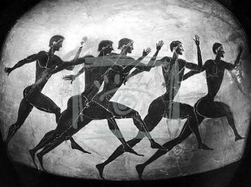
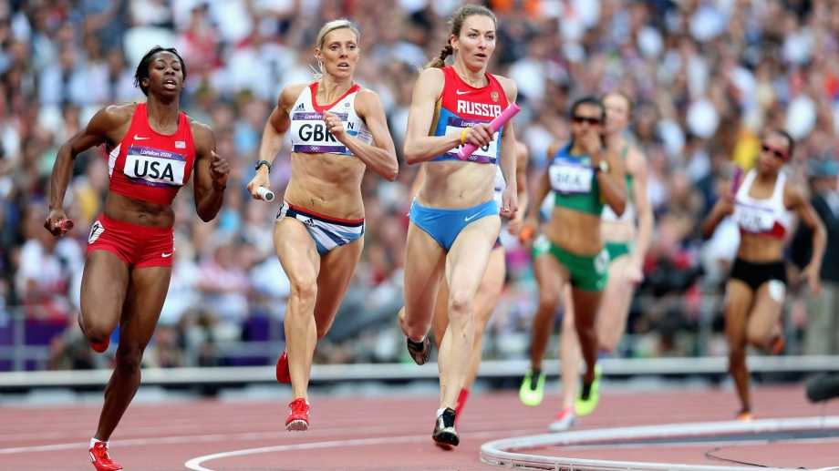
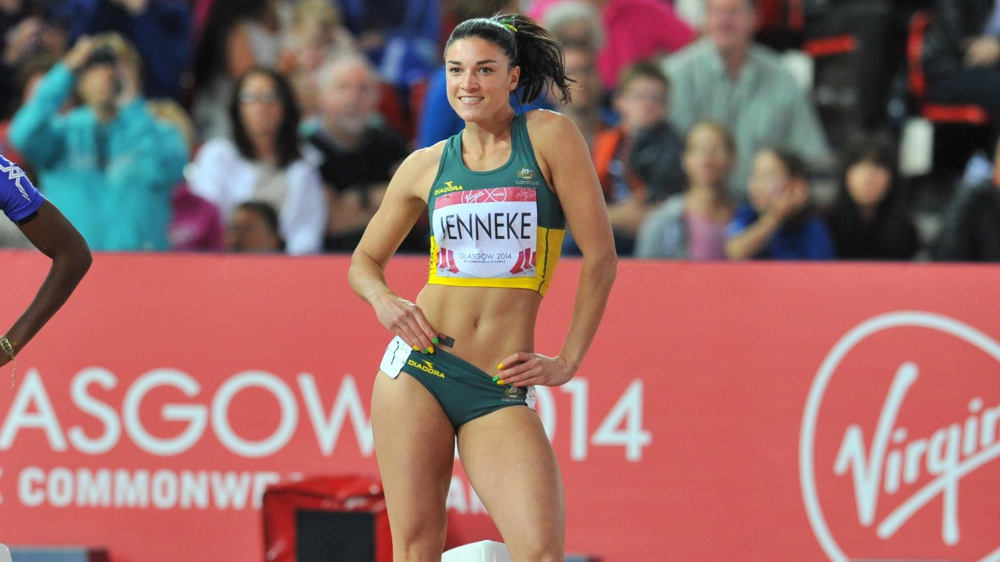

История развития легкой атлетики
Состязания проводились везде и на протяжении всего существования человечества, но в древности люди были заинтересованы исключительно воспитанием воинов, способных с минимальными потерями приносить победы в боях. Военный интерес к воспитанию физически развитых мужчин постепенно стал перерождаться в спортивные игры, основными состязаниями в которых были на выносливость и силу. С этого момента и началось зарождение легкой атлетики.
Первый победитель спортивных состязаний легкой атлетики (по подтвержденным данным) - повар из города Элиды по имени Кореб, который в 776 году до нашей эры быстрее всех пробежал дистанцию в 1 стадии (около 192 метров). Легкая атлетика в древней Греции имела отличия от современных соревнований, например, сейчас диск для метания весит 2 килограмма для мужчин и 1 килограмм для женщин, но в древности диски были разные практически по всем параметрам: Применялись различные материалы (дерево, металл и бронза). Внешний вид у них также изменялся (по неопределенным причинам). Самое главное отличие - это вес, который варьировался от 1,25 килограмма до 6,63. Одним из самых популярных соревнований среди болельщиков было метание копья, что, скорее всего, связано с военным направлением данного вида спорта, а остальные состязания собирали меньше фанатов, но входили в состав Олимпийских игр по причине проверки возможностей тела и духа человека.
Современная легкая атлетика
Древние Олимпийские игры очень сильно отличались от того, что мы наблюдаем сейчас, за счет влияния людей, их веры и отношения к соревнованиям. История развития легкой атлетики в современном виде началась в 1837 году. Современными соревнования по «легким» видам спорта стали после проведения в Англии первого состязания по бегу на 2 километра. Чемпионат проводился среди учеников колледжа города Регби, а уже после этого началась популяризация в других учреждениях и городах: Оксфорд, Лондон, Кембридж и прочих. Затем к играм начинают прибавлять и другие состязания: 1851 год – прыжки в высоту и длину с разбега, 1864 год – метание ядра и молота, бег с препятствиями и другие физические состязания. В 1865 году в Лондоне образовался первый в мире атлетический клуб, добившийся проведения чемпионата страны по различным видам спорта. Через 3 года Нью-Йорк подхватывает идею Британских спортсменов и организует собственную ассоциацию, что начинает популяризацию соревнований на материке Нового Света.
Остальные европейские страны поняли немного позже, что спорт привлекает огромное количество людей, и начали проводить соревнования с 1880 года, а к 90-му году того же века вся Европа уже была во «власти» спорта. Соревнования по легкой атлетике, после начала популяризации, проводились исключительно внутри каждой страны, и только в 1896 году в Афинах провели настоящие Олимпийские игры, которые состояли из 12 различных состязаний и включали несколько стран. Американские спортсмены легкой атлетики были подготовлены на высшем уровне практически по всем видам состязаний и получили большую часть медалей, с того момента они приезжают подготовленными и лидируют по этим видам соревнований. Америка показала отличный результат на первых Олимпийских играх и после этого удерживает лидирующие позиции по числу победителей, но уже не в таком количестве, так как другие страны поняли важность данного мероприятия и подготавливают будущих чемпионов по собственным программам. История возникновения легкой атлетики хранит множество чемпионов, но больше всех помнят первых победителей: Р. Юри (чемпион 2 и 3 Олимпиады по прыжкам с места), Ортер, Матиас, Торп и Оуэнс (чемпионы по тройному прыжку олимпиады), Корженевский (четырехкратный победитель по спортивной ходьбе) и остальные победители, которые навсегда останутся первыми, так как с них началось зарождение современных игр.

Современная легкая атлетика сталкивается с многочисленными испытаниями. Главной головной болью международной федерации легкой атлетики (ИААФ) остается проблема допинга, который продолжает атаковать легкоатлетический спорт со всех сторон. Использование химических препаратов и физиологических методов стимуляции с целью искусственного повышения результатов в лёгкой атлетике существует столько же, сколько существует профессиональный спорт. Первые случаи употребления стимулирующих препаратов уходят корнями в античность. До 1980-х годов случаи применения допинга были единичны, не находили полного подтверждения и не привлекали общественного мнения, являясь исключением из правил. В 1968 году рекордсменки мира Ирина и Тамара Пресс ушли из спорта, после того как на Олимпийских играх, в качестве дополнительной процедуры, ввели определение пола спортсменок. Начиная с 1980-х годов, IAAF принимает решение в корне изменить подход к использованию допинга спортсменами и санкциям. Антидопинговые проверки существовали достаточно давно, но процедура их проведения была такова, что атлеты могли заранее подготовиться. В 1984-м году Татьяна Казанкина, во время соревнований в Париже, была внезапно приглашена на допинг-пробу, отказалась и была дисквалифицирована.